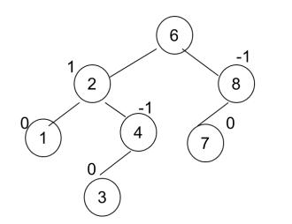

Los árboles binarios de búsqueda, son un tipo especial de árbol binario cuya característica radica en la forma ordenada de insertar sus elementos, facilitando así la búsqueda de un nodo en particular. Para puntualizar aun más, se tratarán los árboles binarios de búsqueda, en los que se tiene preestablecido un cierto orden, que seguramente ayudará a encontrar un cierto dato dentro de un árbol con mucha rapidez.
Se considera que un árbol binario está balanceado cuando todos sus niveles,excepto el último, están integrados a la máxima capacidad de nodos.
Existen diferentes propuestas para balancear los árboles y cada una de ellas repercute en la eficiencia de las operaciones de inserción y eliminación de los nodos.
La más común es la técnica de árboles AVL.
Es un árbol de búsqueda binario que trata de mantenerlo lo más balanceado posible, conforme se realizan operaciones de inserción y eliminación.
En los árbolesAVL se debe cumplir el hecho de que para cualquier nodo del árbol, la diferencia entre las alturas de sus subárboles no exceda una unidad.
Factor de Balanceo: Los nodos de un árbol AVL guardan un valor -1, 0, 1 , que se conoce como Factor de Balanceo (FB) y representa la altura entre las alturas de sus subárboles. Un FB igual a cero de un nodo significa que las alturas de sus subárboles son iguales. Un FB positivo significa que la altura de su subárbol derecho es mayor al subárbol izquierdo. Un FB negativo significa que la altura de su subárbol izquierdo es mayor al subárbol derecho
